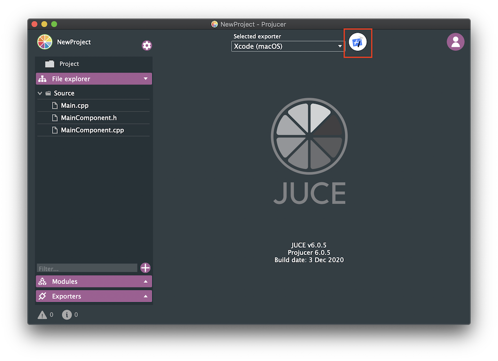

Installation
Installing JUCE
Before creating your first JUCE application, make sure that your local machine has either Visual Studio or Xcode installed.
In addition, you need to install the C++ toolchain for the according opperating system:
Visual Studio: During installation, ensure that you select the "Desktop development with C++" workload.
Xcode: After installation, ensure that you the right components: File>Settings>Components>macOS XX.X
You now may download JUCE from here.

Unpack the JUCE folder and place it to some location on your computer. Your user home folder is a convenient place.
Go into the JUCE folder you just moved. Launch the "Projucer", which is located in there.
Next, you should set the global paths for "Projucer". You can do this via the menu bar on the top left:

Creating an Application
If you are launching "Projucer" for the first time, you are presented with the new project window. You also can access this window via File>New Project.
Projucer - New Project Window

Select your project type
On the left-hand side of "Projucer", you can select a project type. This will add all the dependencies to create the programm selected and create code, to make the application run.
You can select from the following types:
| Project type | Description |
|---|---|
| Application > Blank | Creates a blank JUCE application |
| Application > GUI | Creates a blank JUCE application with a application window. |
| Application > Audio | Creates a application like "Application > GUI", but with all the setup code for audio in- and outputs. |
| Application > Console | Creates a command-line application without a GUI |
| Application > Animated | Creates a JUCE GUI application which is optimized for animations. |
| Application > OpenGL | Creates a JUCE GUI application with support for openGL drawing, like 3D model import and GLSL shaders. |
| Plug-In > Basic | Creates a basic audio plug-in. This plugin can be exported in the VST, Audio Unit and AAX formats. |
| Plug-In > ARA | Creates a plugin with ARA (Audio Random Access) support. |
| Library > Static Library | Creates a library that will be compiled into the final executable. |
| Library > Dynamic Library | Creates a library that are linked at runtime. |
Alternatively, you may start with a example project. You can open those by clicking the "Open Example" tab on the left-hand side of "Projucer".
Create the Project
After you selected the project type, you can fill out some additional project settings on the right-hand side: - Project Name: Give your application a custom Name - Modules: Here you can add and remove modules, that you are going to use in your project. - Exporters: Here you select which IDEs you want to use to build and debug your app.
The Projucer currently has exporters for the following IDEs:
| OS | build systems |
|---|---|
| macOS | Xcode |
| Windows | Visual Studio |
| Linux | Makefile |
| iOS | Xcode |
| Android | Android Studio |
Note: If you use Visual Studio create a audio plugin and don't want to manually copy the plugin after every build, I suggest you to enable the "Plugin Copy Step":

Export the project and open in IDE
After you created your project and set everything up, you can launch your IDE withing Projucer: 
Open existing projects
To open existing Projucer project's, you can either double-click the .jucer file in your project or click on "File>Open..." in Projucer.